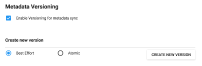

Metadata creation happens at the central instance. Use a user with required authorities to setup the metadata. The user being used to create the metadata also has a bearing on the successful import of the metadata version given the version type is "ATOMIC". Each metadata entity is associated with a "User" object. If this "User" reference is missing while importing (for ATOMIC), the import will fail at the validation phase itself. For metadata versions which are of type "BEST_EFFORT" it should be alright. The point here is, the user that creates metadata also needs to sync down to local instances in order to successfully import the metadata given its of "ATOMIC" type. Once you have created metadata:
Go to Settings > Synchronization > Enable Versioning for Metadata Sync > Select the specific metadata type (ATOMIC or BEST EFFORT) > Click "CREATE NEW VERSION" button
|  |
A new version will be created in the system and can be seen in a table on settings page itself. Now, a new version is available in central system for all the local systems to download. As a practice it is recommended to keep the metadata versions size small and logical.